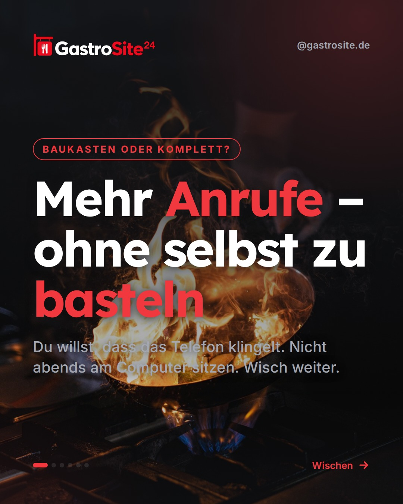
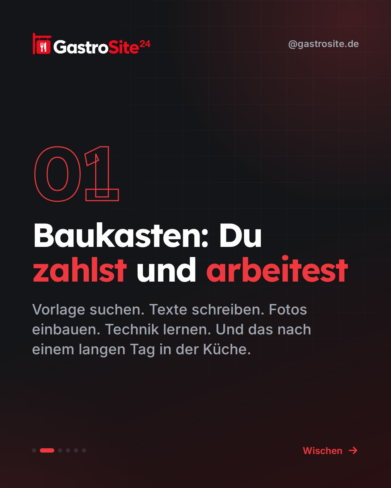
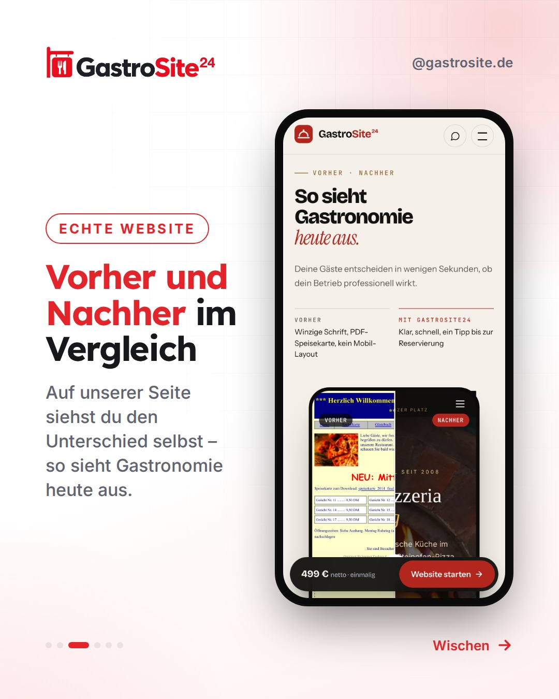
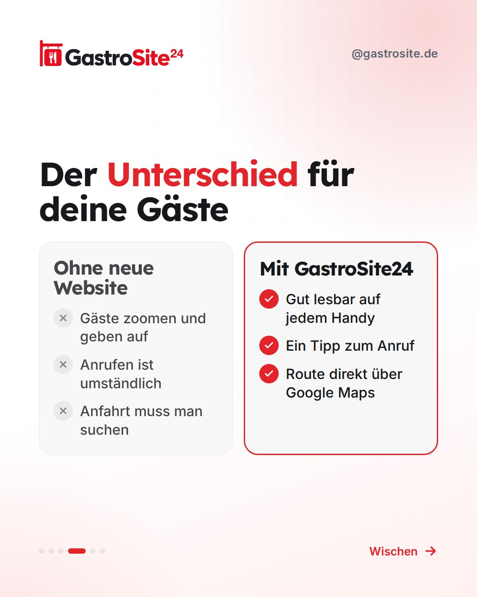
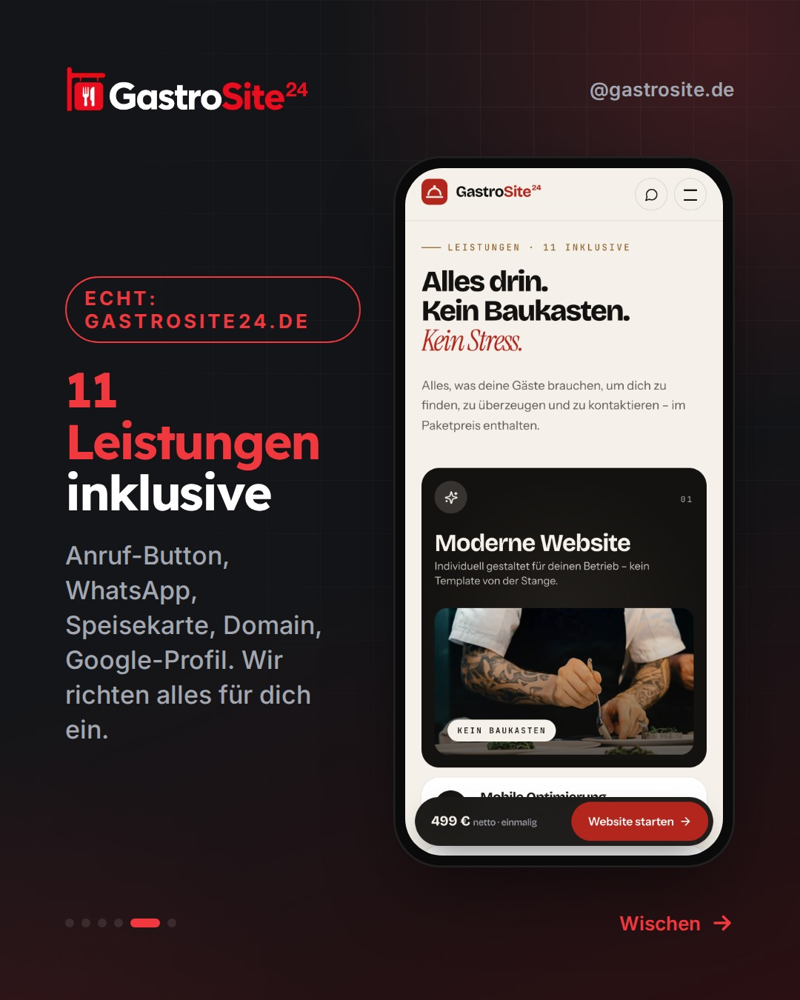
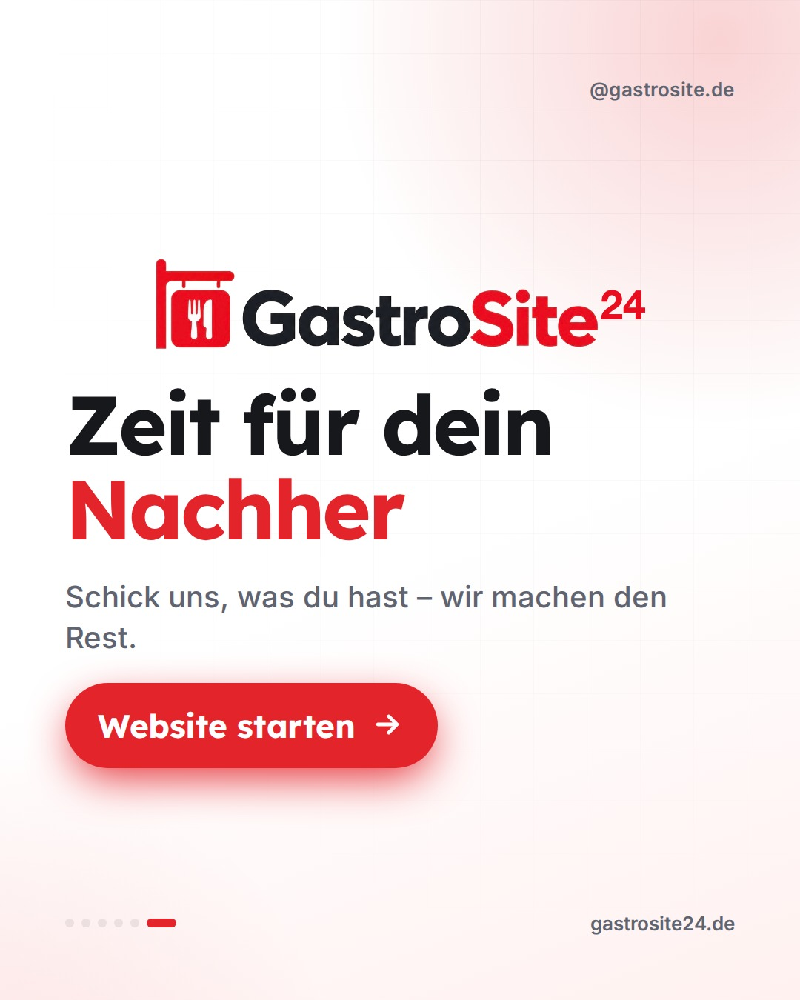

Samstag, 10.10.2026 · 12:00
SliderFehler






Baukasten vs. Komplett-Service: gleicher Preisbereich, aber wir machen die ganze Arbeit
Komplett-Service zum Preis eines Baukastens
Mehr Anrufe – ohne selbst zu basteln. Website für 499 € bestellen → gastrosite24.de (Link in Bio) Beim Baukasten zahlst du. Und dann machst du alles selbst: Vorlage suchen, Texte schreiben, Technik verstehen. Bei uns ist es anders. Gleicher Preisbereich – aber wir machen die Arbeit. Design, Texte, Technik, Domain und dein Google-Profil. Du schickst nur, was du sowieso hast. Du kochst weiter. Das Ziel: Gäste finden dich, tippen auf den Anruf-Button – und dein Telefon klingelt. 499 € netto einmalig. Im ersten Jahr keine laufenden Kosten, ab dem zweiten Jahr 299 €/Jahr (Hosting, Domain, Betreuung), jährlich kündbar. Jetzt Website starten: gastrosite24.de – Link in Bio 📞 #gastronomie #restaurantmarketing #gastrosite #selbstständig #imbissStory ansehen ↗
Instagram API 17841421463517910/media_publish: Fatal (code -1/2207085)